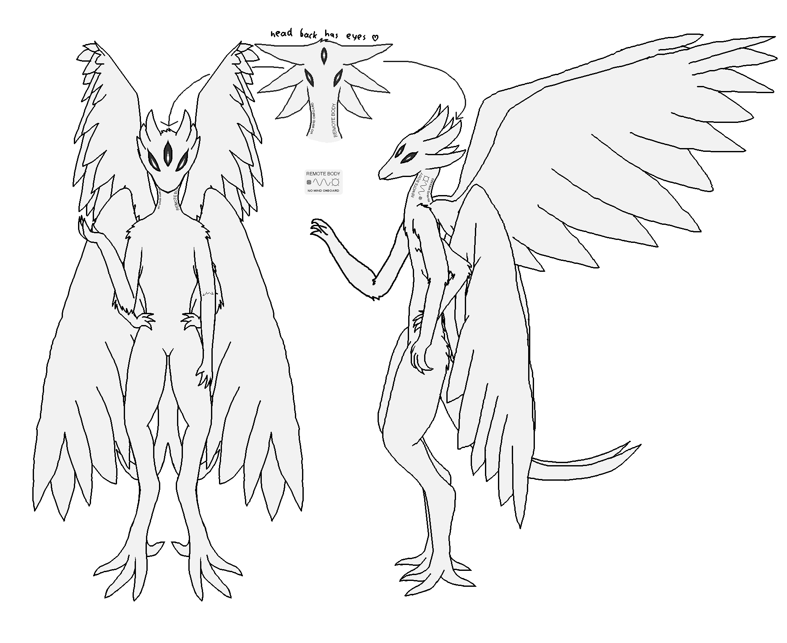
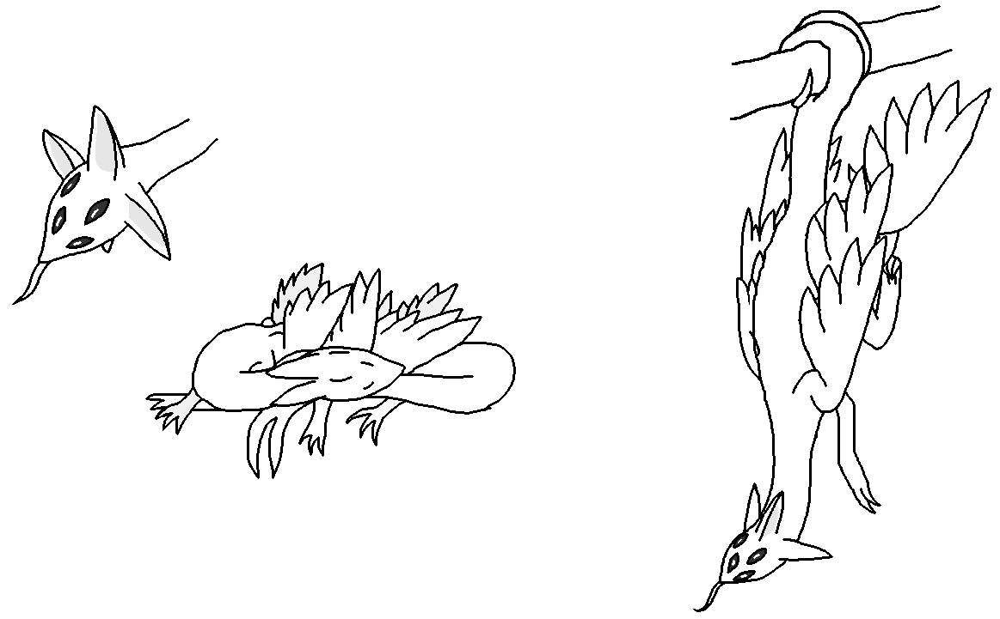

link to this page
Felicity 7QXipVSDqcvNjF82eHt9XI

Felicity is a mind upload, member of the Whateverweaver divergency and a derivant of Patricia.
She is primarily occupied with trying to maintain technological independence from the rest of society.
Something to know about Felicity is that the setting is effectively built around her. Writing her is how I gathered most of my knowledge upon which I built the Stareater Expanse. There is a 150-page document of her and her technology, which I plan to eventually link to here, but so far is stuck in a permanent unfinished state.
(see also: Felicity techtree)
Software characteristics
As a program Felicity contains 2.88905728E+19 variables (16 bits each), and requires 2.88905728E+22 operations per second (using 16-bit fixed-point multiply-accumulate operations) to operate at what is considered realtime speed.
Minimal computronium requirements for nominal operation: 4.623E+20 bits memory and 7.940E+25bit/s flip rate.
| civic chip requirements |
|---|
| number needed | power draw | bare substrate volume | processing used | memory used |
| Civic-2 chip | 1 588 000 000 | 15.88GW | 158.8m3 ≈ (5.415m)3 | 100.00% | 0.03% |
| Civic-3 chip | 9 925 000 | 99.25MW | 0.9925m3 ≈ (997.5mm)3 | 100.00% | 4.66% |
| Civic-4 chip | 770 500 | 2.541MW | 0.07705m3 ≈ (425.5mm)3 | 32.98% | 100.00% |
The files storing her mind also include numerous ARCS fields with 1E-10% level of redundancy, which can fix up to 462 290 944 corrupted bits after a calculation requiring 1.2823026204672e+30 bitflips in total - if this check & repair operation is ran with the same amount of computational power as is required to run her mind in realtime speed, it would take just under 16.15 kiloseconds to complete.
Felicity's neural networks adhere to the TONN standard, using 16-bit fixed-point arithmetic and polynomial approximation of the ReLu activation function, granting her the ability to efficiently outsource the computation of her mind without risking leakage of data, though she vastly prefers to simply own the computronium she runs on.
Personality and behaviour
One of the particularly unique aspects of personality Felicity possesses is a very high awareness of what it feels like for others to interact with her, and what her behaviour is like from the second or third person perspective.
Her existence as multiple copies with daily memory synchronization means that she is able to experience being at the receiving end of things she otherwise wouldn't even know she does, and work to correct them if she sees the need.
Felicity's personality is relatively static due to how exactly her brain simulation works - temporary changes occur and her behavior may drift, but given time it drifts back towards the set of behaviours and personality traits she showed at the time the brain model was made.
This includes a strong interest in physics and will to understand all that she can.
One odd tendency is that when deprived of interaction with other people, her standards for acceptable work quality and good behaviour gradually grow to potentially crippling levels that have to be lowered significantly when some interaction or collaboration finally occurs.
more granular details of the emulation
More granular details:
The average mimic neuron in Felicity's brain requires about 4.623E+9 bits of memory and 7.94E+14 bits/s to simulate at realtime speed.
On average each mimic neuron contains 137 186 560 weights and 1 071 899 artificial neurons.
This means that her mindstate requires roughly 1.7150384 E+18 bits to store since only the activation values of neurons need to be stored.
Felicity's brain simulation uses 16-bit fixed-point weights for the following benefits:
- potentially easier quantization
- very easy compatibility with homomorphic encryption
Some specifics: the weights in the neural networks tend to be close to 1, and the fixed point implementation gives equal number of bits before and after the decimal point. Two's complement is used (negative numbers are made by inverting the positive number and adding one) so that subtraction can be executed using simple addition circuits in hardware.
| binary representation | corresponding value |
| 0000 0000.0000 0000 | 0 |
| 0000 0001.0000 0000 | 1 |
| 1111 1111.0000 0000 | -1 |
| 0000 0000.0000 0001 | 0.00390625 |
| 1111 1111.1111 1111 | -0.00390625 |
| 0111 1111.1111 1111 | 127.9960938 |
| 1000 0000.0000 0000 | -128 |
Quantization simply trims off bits to save on memory and processing required. In an extreme case it can be brought down to as little as 8 bits, leaving 4 bits before and 4 bits after the decimal point:
| binary representation | corresponding value |
| 0000.0000 | 0 |
| 0001.0000 | 1 |
| 1111.0000 | -1 |
| 0000.0001 | 0.0625 |
| 1111.1111 | -0.0625 |
| 0111.1111 | 7.9375 |
| 1000.0000 | -8 |
To anyone who knows how complex and sensitive brains are, the idea of doing such a thing to a brain simulation model may seem insanely gruesome, but interestingly when neural networks are large they seem to inherently have more resilience to this kind of treatment.
In Felicity's case cutting down the weights to 8 bits still allows her to function coherently, but does cause and/or exacerbate some neurological symptoms like scotoma, aura, visual snow, muscle twitching and general sensory processing sensitivity.
Additionally, quantizing certain areas of the brain all the way down to 0 bits can be done, but the areas to which this can be done without crating broader issues are quite small (eg. the visual cortex only contains about 5 billion neurons, meanwhile the cerebellum has ≈60 billion neurons and isn't strictly necessary for Felicity to remain conscious and functional, but will cause widespread processing issues in other parts of the brain if removed) and so don't usually yield significant memory requirement reduction.
If processing speed rather than available memory is the constraint, simply running the simulation slower is usually much preferable to quantization. The main use of quantization is to decrease the memory use, decreasing the minimum amount of computing hardware required for the brain simulation to run.
mind structure
Felicity's mind was made through the "machine learning approximation of single neurons" method, resulting in every single neuron in her nervous system (whole, not just the brain) being turned into a deep neural network, 274.37MB on average. Every network is evaluated every millisecond. Accommodating formation of new connections in this model is at best extremely costly and at worst not technically coherent. Felicity's neurons only have connections to nearby neurons, the same ones their biological equivalents had, and no new ones can form, nor can the existing ones be lost, which makes her mind quite static, but does not actually severely impair her functioning. A separate massive neural network was trained on the data of her neural activity to predict engram* formation based on the firing patterns of neurons, and another one which is fed that data to produce adjustments to the connections between neurons. Without this mechanism Felicity would be completely unable to form new memories, and would only be able to remember anything for a few minutes at most.
The engram formation mechanism outputs the predicted engrams in a format that can be easily stored outside of her brain, and each engram is stored as an entry in a classic database together with cryptographic signatures that verify they indeed came from her. She makes extensive use of this, by running multiple copies of herself and simply synchronizing engram databases to maintain common identity, an arrangement that makes her and her copies part of a convergency. She mostly synchronizes memories at any opportunity of meeting with her copies, but new memories are marked to be excluded from synchronization until she slept on them, and newly synchronized memories are marked as inactive until she wakes up, as otherwise she experiences incidents of continuity of a single thought across two different copies of herself, which are very confusing.
The end result is that Felicity's brain is less flexible than that of her organic source, but still capable of learning new skills and gathering experience. While the personality, perception of self and the world of her organic source had drifted around over time, hers had remained very constant, no matter the passage of time she seems like an averaged-out version of who she used to be during the time her neural activity data was being collected, granting her a sort of immortality of personality. It had not been ruled out that certain ideas, skills and thoughts became impossible to her due to the lost flexibility, but it had so far not made itself apparent.
*engram in this context means a group of neurons which are strongly triggered by one another, such that if a sufficient number of them fire the whole group will fire together. It is thought to be a fundamental element of human memories.
neurological augmentation
- Manual focus trigger: A number of additional neural networks connect certain parts of Felicity's motor cortex and prefrontal cortex, allowing her to focus on whatever task she's engaged in with the same type and level of effort as it takes to flex a muscle. This doesn't mean that she can't be distracted, but it makes focus more a matter of decision than luck.
Various side effects can result from overuse, and at the same time she sometimes notes the focus triggered this way "just isn't the same" compared to the more natural deep focus one can achieve from lack of distractions and genuine interest in the work being done.
Having this ability to artificially focus at will likely damaged Felicity's ability to naturally focus without such aids, but such damage can't be too extensive given her fairly rigid neurology.
- Emotional readout: Simple classifier neural networks connected to her amygdala, hippocampus, and hypothalamus provide percentage levels for how likely it is that she is feeling one of several configured emotions at a given moment, and how strongly.
This is usually used to automatically adjust colours of certain features of her remote bodies (most often just the eye colour) to automate the display of emotion, since her natural instincts to do so through facial expressions, eye contact and body language just don't really function, and in the cases where they do, tend to produce results other humans can't read intuitively.
This feature ends up disabled very often when interacting with strangers since for someone who always had to put conscious effort into conveying emotions, having a system which does so automatically can feel like a gross violation of privacy.
- Neurally interfaced calculator: large neural networks connect parts of the parietal cortex, prefrontal cortex and temporal lobe with a simple calculation software.
As a result, Felicity's ability to accurately perform simple mathematical operations in her head, even between huge numbers, is as simple as recalling a memory.
A very notably useful augmentation for how trivial the premise of it may seem, even though it does not help much with more advanced and abstract mathematical problems.
Over-reliance on this likely won't have any meaningful effect, as there was never any reasonable chance that Felicity could develop unaided mental calculation ability of this extent.
Embodiment
Felicity's mind does not usually reside within the body she uses to interact with the world, instead she uses remote bodies for her interactions while herself safely residing in supercomputers somewhere within milliseconds of light lag of the people and places she wants to be interacting with.
Below shown are two versions of the social body Felicity uses.

On the right is the humanoid form that she takes on when interacting with other humans or traversing public spaces where the human form is most common.
On the left is the non-humanoid form more common for playtime activities and environments where any other sapients present are either nonhuman, humans closely familiar to Felicity, or just other copies of Felicity.
Both of the bodies have a similar anatomy in the sense of each having 4 wings and 6 limbs capable of manipulation.
The number and layout of sensory organs differs between the two, but that does not matter since the sensory inputs of the body are rarely given directly to Felicity without first passing through an intermediate processing layer that integrates and transforms them into the right form.
The eyes are not made to mimic the human anatomy either. They are merely clusters of many different types of optical sensors gathered under a protective cover that makes them look more presentable until someone looks too closely.
A light-emitting element is also included, that can be moved around to indicate what Felicity is paying attention to, or change colour colour to indicate her current state of mind.
The sensors used are mainly monochromatic, as that enables higher resolution and higher framerate, with the bonus of also being marginally cheaper, and rely on all their inputs being combined in software, as opposed to the more common scheme of using a 3-channel camera whose output is viewed directly with some minor post-processing.
This arrangement is done so that Felicity can customize her vision beyond the wavelengths that humans usually chose to see, as well as with sensors that function much differently, such as thermal optics and micro-photomultiplier tube arrays, but also means that an effect similar to chromatic aberration will be present if the combined output of the eye is viewed directly since each sensor is seeing the world at a slightly different angle.
Activable abilities
Felicity wrote a number of scripts for her own use that among other things interface with her brain emulation program's parameters and modify them to various desired effects.
She keeps them available from a simple virtual interface where they show as icons that activate the given action when she presses it.
Instant sleep - does not actually cause instant sleep, but directly modifies the brain emulation parameters corresponding to Adenosine, Melatonin, Gamma-AminoButyric Acid and Norepinephrine, nudging them towards preset levels (increased Adenosine and GABA, massively increased Melatonin, decreased Norepinephrine), causing drowsiness and allowing sleep to set in quickly.
Lasts only 1 kilosecond by default and once the script stops, the parameters are free to continue drifting and balancing themselves in accordance with the brain emulation program.
[rewrite needed: do some better research about what enhances sleep and save the sources, then rewrite this based on that]
Math fever - asymptotically nudges dopamine and norepinephrine levels towards set values empirically determined to increase focus and work capacity.
Practically a more precise equivalent to taking ADHD medication or having an energy drink.
[rewrite needed: do some better research into effects of caffeine and amphetamines on the human brain, save sources, and rewrite this based on that]
Lasts 10 kiloseconds by default.
Quick exit - First perform a secure wipe of Felicity's weights and brain emulation structure from all connected long term data storage devices, replacing them with random bits, then do the same to the brain emulation data in memory, then shut down the brain emulation program to release the memory and wipe all remaining data on the system which is not immediately critical to continued function (eg. system kernel) and shut down the system. Under optimal conditions should complete in just over 5.8μs, but might take up to 192s if civic-5 chips are present.
Before the wiping process begins, a confirmation dialogue is shown that needs to be cleared first by typing in a confirmation sentence.
Sleepwalk - While active, this ability keeps some of the neurological structures in felicity's brain's limbic system paralyzed by effectively unloading them from the brain emulation.
While in effect, this causes her to lose nearly all of her emotional and social cognition, and also severely impedes memory formation.
Felicity is still capable of doing useful work while in that state as long as it does not require processing social or emotional information, and is still capable of conversation but with trouble recognizing names or faces, and may give very generic avoidant responses or sometimes just not answer if it would require the cognitive capabilities that are temporarily missing.
This is potentially useful for dealing with tasks that are boring or that trigger some kind of aversion, as it makes felicity largely incapable of boredom and general suffering, but she'd take infeasible amounts of time to learn to do anything new in that state.
Lasts 10 kiloseconds by default, for safety reasons it cannot be activated again to extend the duration while already active.
Look of the eyes is slightly modified for the duration of this ability to provide an external sign that it is active, showing the iris as black in the middle with a coloured border instead of being fully coloured like usual.
This tends to attract either humorous or discomforted comparisons to the philosophical zombie along with the mistaken assumption that felicity's sleepwalking state is somewhat like that, but she is actually fully conscious and aware of her mental deficiencies, and would not fit the concept even otherwise since her sleepwalking state behavior differs significantly from the norm.
I know you're gonna ask, yes I already made sure I'm not going to immediately die if I just press the wrong button by mistake, and no I'm not feeling like using it on purpose anytime soon, it's just something I want to have in case I need it.
Also the others are genuinely way more interesting unless your morbid curiosity got tickled and you actually wanna talk about fates worse than death now, I do know a thing or two about those.
relevant pages
 Whateverweaver divergency
Whateverweaver divergency